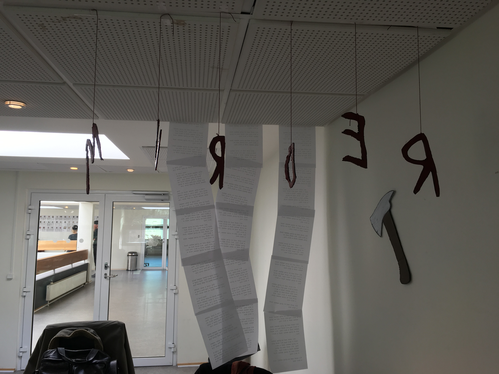
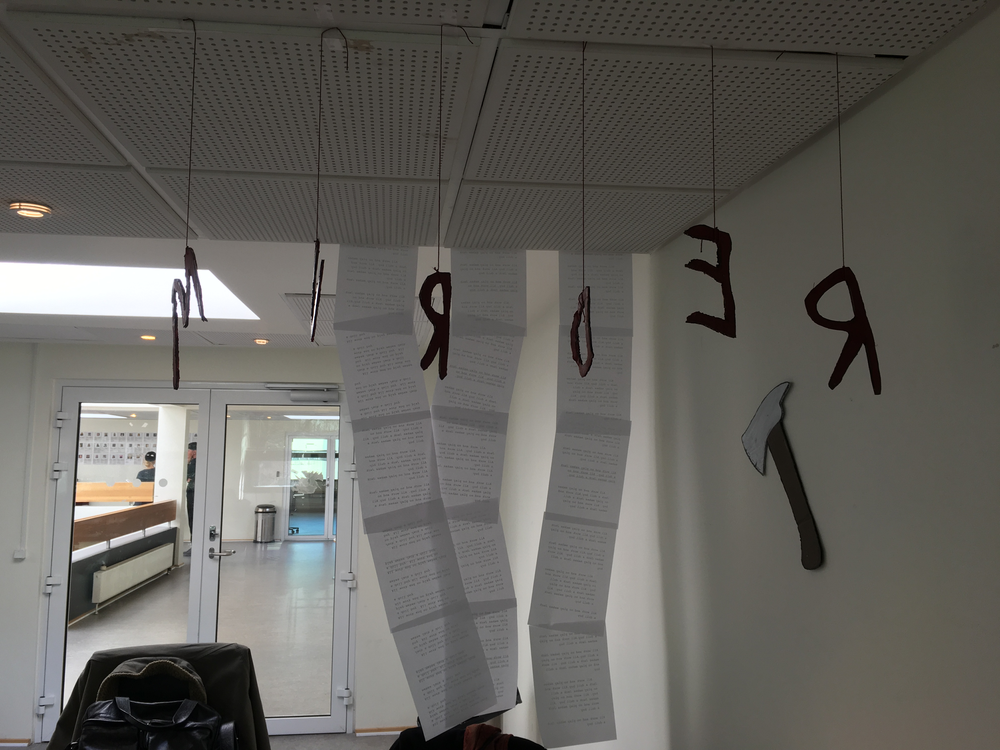

02.04.06 Link to Final Interactive Production and 02.04.07 Presentation
What was the project?
The goal of the project was to create a digital, interactive poster of a movie. The sender was Cinemateket and our target group was young adults. My group chose The Shining.
The interactive poster had to include 3 stages: an opening scene, an interactive middle part and a final result stage.
What did I learn?
I mainly worked with the design side on this project, and created all the characters for the poster. I worked based on a moodboard, style tile as well as a personas collage. All within the style of the movie. I created a couple of different sprite sheets, although only one was used in the final production.
The first persona collage I created wasn't specific enough to the person I had created. Based on this feedback I created a second one which contained more creepy images.
We also worked with user testing and adjusted a few things along the way based on this. For example, that the call to action should be more obvious at the end.
What would I change today?
The project stays within the style we were aiming for, but isn't particularly interesting. I feel like we could have worked more with the personas collage and created a bigger story.
This is the first persona collage

This is the second persona collage I created


The images below are from the presentation day. I created some hanging letters that spell out redrum from one side and murder from the other.
We also printed out the carpet design on the table and hung up some typewriter sheets with the iconic "All work and no play makes jack a dull boy."
 
